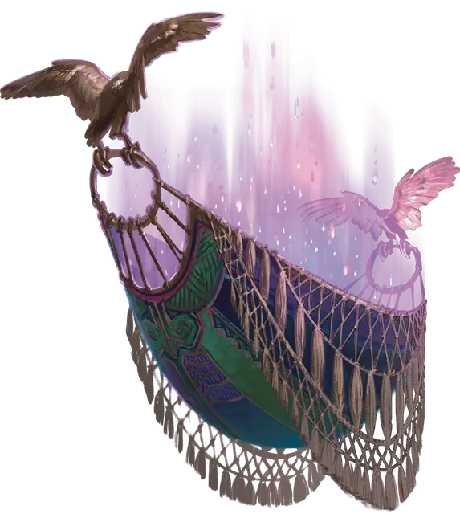

Гамак миров
Hammock of Worlds
Чудесный предмет, легендарный

Рекомендованная стоимость от 50 001 зм
Гамак миров — это пёстрый гамак, сотканный с традиционными Атагуанскими узорами. Он может быть использован только членом ордена, известного как Зеленые Врачи.
Вы можете действием развернуть и разложить Гамак миров на твердой поверхности, после чего он создаст двусторонний портал к Призрачной Орхидее Тепуи в Стране Фей или к Древнему Засухе в Дальнем Пределе (по выбору использующего предмет). Вы можете действием закрыть открытый портал, взявшись за края ткани и сложив её. После того как Гамак миров откроет портал, он не сможет сделать это снова в течение 1к8 часов.